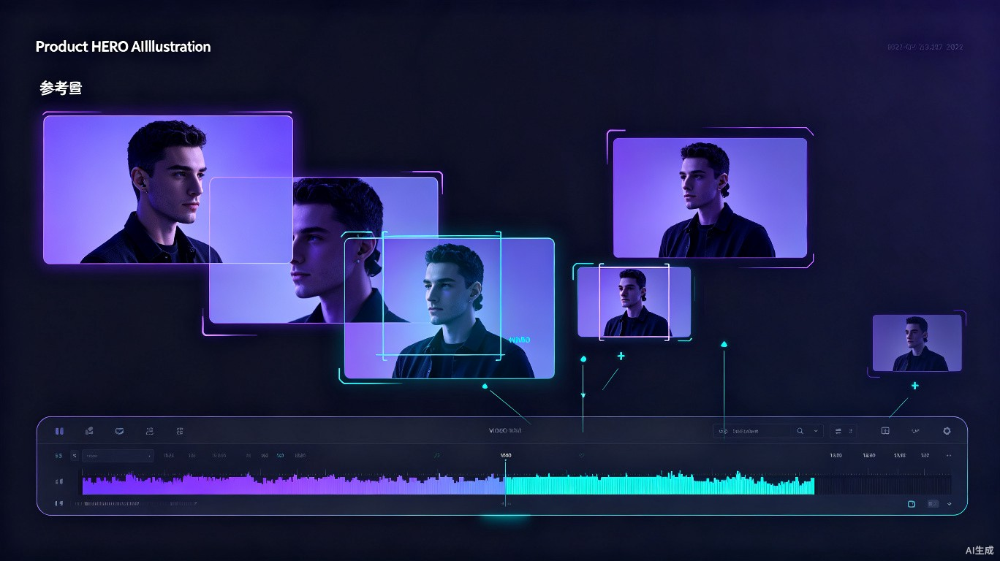
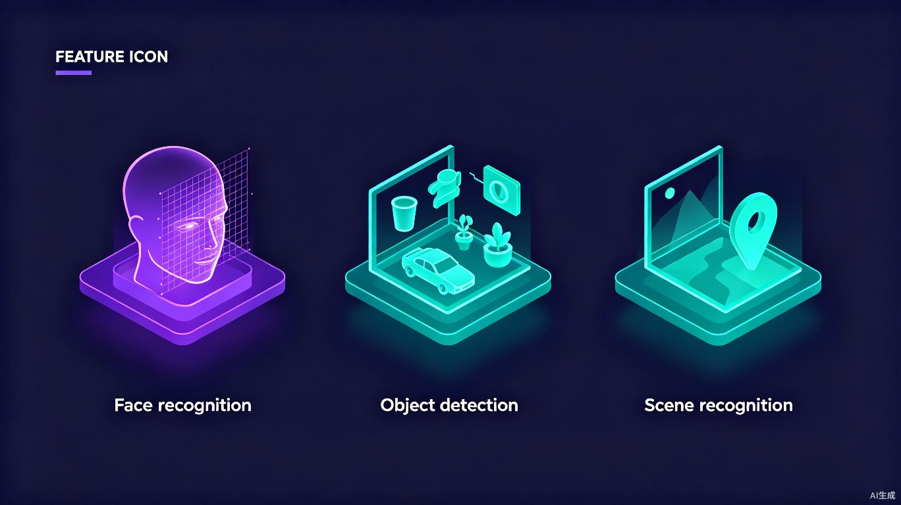
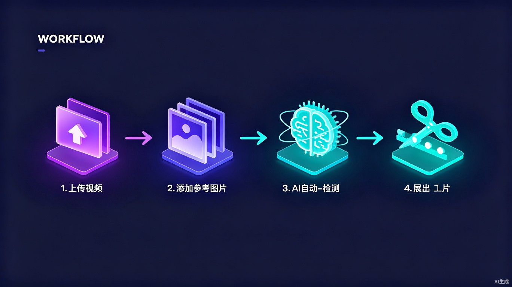

上传视频，给几张参考图，AI 自动帮你找出所有出现的镜头并剪辑输出。 找人、找物、找场景，几十小时素材几分钟搞定。

每一个剪辑师、UP 主、粉丝后援会都懂的痛——几十小时的素材， 要找出某个人的所有镜头，只能拖着进度条一点点翻。
几十小时的综艺或剧集，手动找一个人的镜头可能要花一整天，眼睛都看花了。
一闪而过的远景、侧脸、背影，手动翻找根本看不过来，错过大量可用素材。
专业剪辑软件只有半成品功能，C 端没有一款好用的"找人+自动剪辑"工具。
基于多模态视觉识别技术，从人脸到物体再到场景， 三维度解锁视频检索的全部想象力。

输入几张参考照，精准定位视频中该人物出现的所有片段，侧脸、远景、戴口罩也能识别。
找车、找猫、找某款杯子，只要你有参考图，AI 就能帮你把所有相关镜头找出来。
海边、城市夜景、室内厨房……按场景类型快速筛选素材，做混剪和氛围视频超方便。
无需学习复杂操作，上传、参考、等待、导出—— 每个人都能上手的 AI 剪辑利器。

支持 MP4、MOV 等主流格式，单文件可到数十 GB。
上传 3-5 张人物/物体/场景的参考截图。
AI 逐帧扫描，智能匹配，生成精确时间轴标注。
支持片段合集导出、时间码清单、单独片段等多种格式。
从粉丝创作者到专业剪辑师，每个需要和长视频打交道的人， 都能从中获益。
从几十小时的综艺、剧集中快速剪出偶像的所有镜头，做 cut、做安利、做数据。
快速定位素材中的可用片段，不用再对着几十小时 raw 素材发呆。
从大量素材中快速筛选特定场景或物体镜头，让灵感不被找素材打断。
高效整理嘉宾镜头、品牌露出，大大提升物料整理和审核效率。
当找素材不再是负担，创作者可以把更多时间花在真正的创作上。
将"几十小时素材找人"的时间从 按天计算 缩短到 按分钟计算， 效率提升百倍以上。剪辑师的生产力工具，粉丝创作者的效率神器。
目标用户付费意愿明确，支持 订阅制 + 按量付费 多种模式。 从人脸切入扩展到物体、场景识别，用户群体持续扩大，商业天花板高。
视频检索技术的想象力，远不止于娱乐创作。 我们相信，这项能力可以延伸到更多需要它的地方。
以 人脸、物体、场景识别 为核心，服务于粉丝创作、短视频剪辑、 综艺物料整理等场景，成为创作者的效率标配工具。
从"以图搜视频"进化到 自然语言搜视频， 支持语音、文字描述等多种检索方式，构建通用的视频内容搜索引擎。
将技术能力延伸至 安防刑侦场景， 辅助警方从海量监控视频中快速定位嫌疑人、寻找失踪人员， 大幅提升案件侦破效率，让技术发挥更大的社会价值。